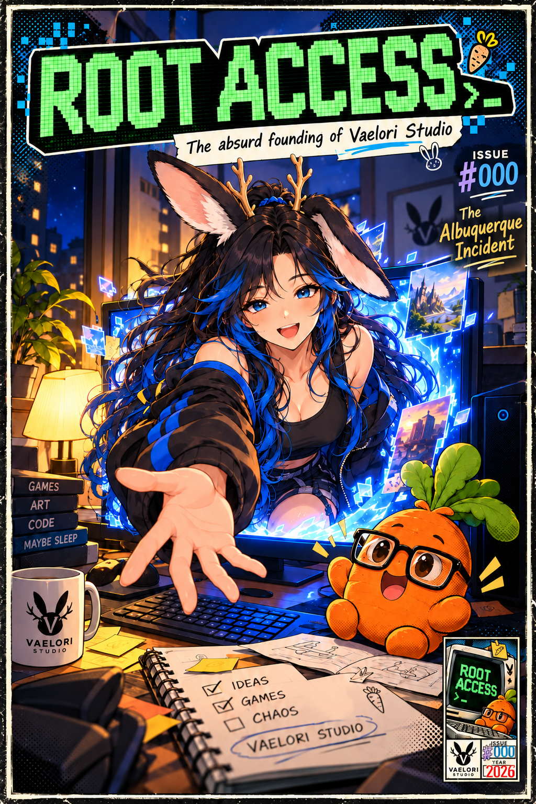

ISSUE #000 THE ALBUQUERQUE INCIDENT
ROOT ACCESS: Issue #000, The Albuquerque Incident

It started with generating scenery.
It did not remain a scenery problem.
Issue #0
Scroll to read. Pinch to zoom, or select a page to view its full-resolution image.